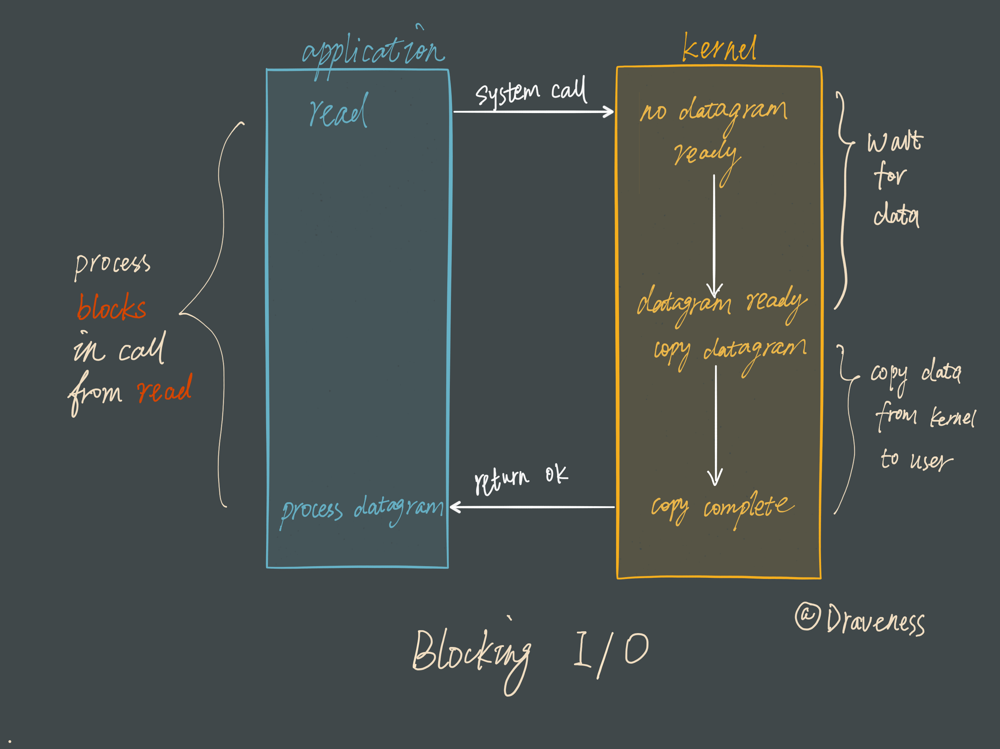
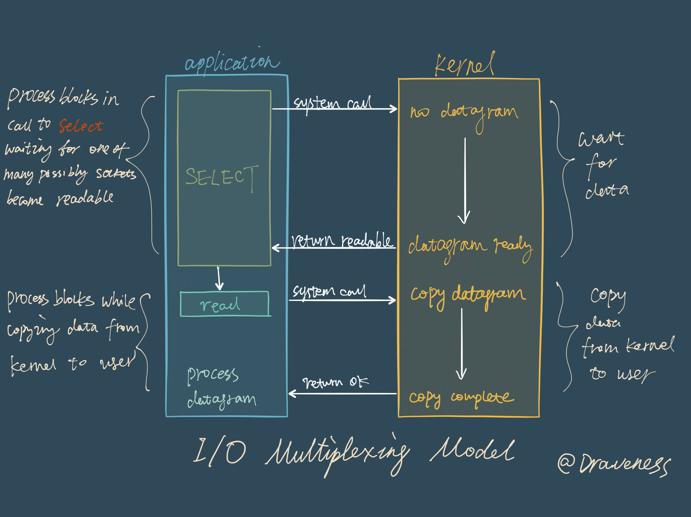
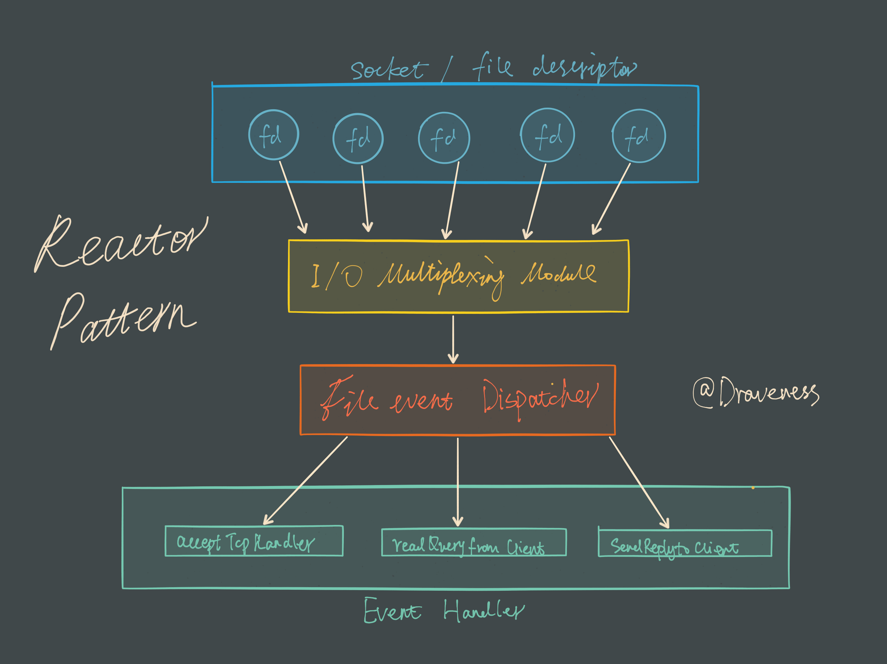
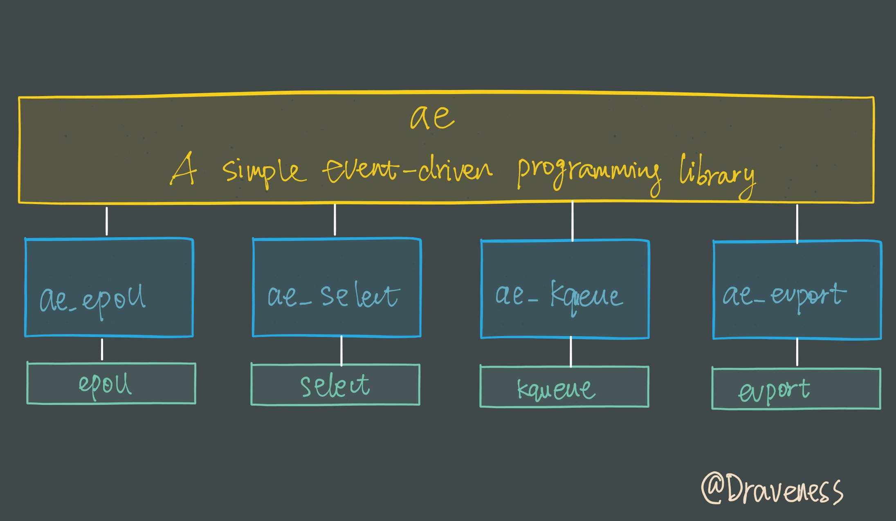
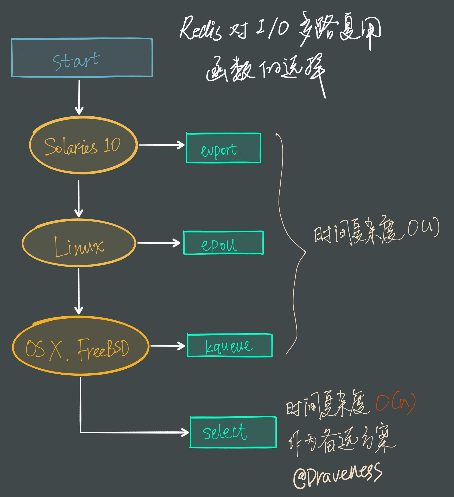

Redis 和 I/O 多路复用
最近在看 UNIX 网络编程并研究了一下 Redis 的实现，感觉 Redis 的源代码十分适合阅读和分析，其中 I/O 多路复用（mutiplexing）部分的实现非常干净和优雅，在这里想对这部分的内容进行简单的整理。
几种 I/O 模型
为什么 Redis 中要使用 I/O 多路复用这种技术呢？
首先，Redis 是跑在单线程中的，所有的操作都是按照顺序线性执行的，但是由于读写操作等待用户输入或输出都是阻塞的，所以 I/O 操作在一般情况下往往不能直接返回，这会导致某一文件的 I/O 阻塞导致整个进程无法对其它客户提供服务，而 I/O 多路复用就是为了解决这个问题而出现的。
Blocking I/O
先来看一下传统的阻塞 I/O 模型到底是如何工作的：当使用 read 或者 write 对某一个文件描述符（File Descriptor 以下简称 FD)进行读写时，如果当前 FD 不可读或不可写，整个 Redis 服务就不会对其它的操作作出响应，导致整个服务不可用。
这也就是传统意义上的，也就是我们在编程中使用最多的阻塞模型：

阻塞模型虽然开发中非常常见也非常易于理解，但是由于它会影响其他 FD 对应的服务，所以在需要处理多个客户端任务的时候，往往都不会使用阻塞模型。
I/O 多路复用
虽然还有很多其它的 I/O 模型，但是在这里都不会具体介绍。
阻塞式的 I/O 模型并不能满足这里的需求，我们需要一种效率更高的 I/O 模型来支撑 Redis 的多个客户（redis-cli），这里涉及的就是 I/O 多路复用模型了：

在 I/O 多路复用模型中，最重要的函数调用就是 select，该方法的能够同时监控多个文件描述符的可读可写情况，当其中的某些文件描述符可读或者可写时，select 方法就会返回可读以及可写的文件描述符个数。
关于
select的具体使用方法，在网络上资料很多，这里就不过多展开介绍了；与此同时也有其它的 I/O 多路复用函数
epoll/kqueue/evport，它们相比select性能更优秀，同时也能支撑更多的服务。
Reactor 设计模式
Redis 服务采用 Reactor 的方式来实现文件事件处理器（每一个网络连接其实都对应一个文件描述符）

文件事件处理器使用 I/O 多路复用模块同时监听多个 FD，当 accept、read、write 和 close 文件事件产生时，文件事件处理器就会回调 FD 绑定的事件处理器。
虽然整个文件事件处理器是在单线程上运行的，但是通过 I/O 多路复用模块的引入，实现了同时对多个 FD 读写的监控，提高了网络通信模型的性能，同时也可以保证整个 Redis 服务实现的简单。
I/O 多路复用模块
I/O 多路复用模块封装了底层的 select、epoll、avport 以及 kqueue 这些 I/O 多路复用函数，为上层提供了相同的接口。

在这里我们简单介绍 Redis 是如何包装 select 和 epoll 的，简要了解该模块的功能，整个 I/O 多路复用模块抹平了不同平台上 I/O 多路复用函数的差异性，提供了相同的接口：
static int aeApiCreate(aeEventLoop *eventLoop)static int aeApiResize(aeEventLoop *eventLoop, int setsize)static void aeApiFree(aeEventLoop *eventLoop)static int aeApiAddEvent(aeEventLoop *eventLoop, int fd, int mask)static void aeApiDelEvent(aeEventLoop *eventLoop, int fd, int mask)static int aeApiPoll(aeEventLoop *eventLoop, struct timeval *tvp)
同时，因为各个函数所需要的参数不同，我们在每一个子模块内部通过一个 aeApiState 来存储需要的上下文信息：
// select
typedef struct aeApiState {
fd_set rfds, wfds;
fd_set _rfds, _wfds;
} aeApiState;
// epoll
typedef struct aeApiState {
int epfd;
struct epoll_event *events;
} aeApiState;
这些上下文信息会存储在 eventLoop 的 void *state 中，不会暴露到上层，只在当前子模块中使用。
封装 select 函数
select可以监控 FD 的可读、可写以及出现错误的情况。
在介绍 I/O 多路复用模块如何对 select 函数封装之前，先来看一下 select 函数使用的大致流程：
int fd = /* file descriptor */
fd_set rfds;
FD_ZERO(&rfds);
FD_SET(fd, &rfds)
for ( ; ; ) {
select(fd+1, &rfds, NULL, NULL, NULL);
if (FD_ISSET(fd, &rfds)) {
/* file descriptor `fd` becomes readable */
}
}
- 初始化一个可读的
fd_set集合，保存需要监控可读性的 FD； - 使用
FD_SET将fd加入rfds； - 调用
select方法监控rfds中的 FD 是否可读； - 当
select返回时，检查 FD 的状态并完成对应的操作。
而在 Redis 的 ae_select 文件中代码的组织顺序也是差不多的，首先在 aeApiCreate 函数中初始化 rfds 和 wfds：
static int aeApiCreate(aeEventLoop *eventLoop) {
aeApiState *state = zmalloc(sizeof(aeApiState));
if (!state) return -1;
FD_ZERO(&state->rfds);
FD_ZERO(&state->wfds);
eventLoop->apidata = state;
return 0;
}
而 aeApiAddEvent 和 aeApiDelEvent 会通过 FD_SET 和 FD_CLR 修改 fd_set 中对应 FD 的标志位：
static int aeApiAddEvent(aeEventLoop *eventLoop, int fd, int mask) {
aeApiState *state = eventLoop->apidata;
if (mask & AE_READABLE) FD_SET(fd,&state->rfds);
if (mask & AE_WRITABLE) FD_SET(fd,&state->wfds);
return 0;
}
整个 ae_select 子模块中最重要的函数就是 aeApiPoll，它是实际调用 select 函数的部分，其作用就是在 I/O 多路复用函数返回时，将对应的 FD 加入 aeEventLoop 的 fired 数组中，并返回事件的个数：
static int aeApiPoll(aeEventLoop *eventLoop, struct timeval *tvp) {
aeApiState *state = eventLoop->apidata;
int retval, j, numevents = 0;
memcpy(&state->_rfds,&state->rfds,sizeof(fd_set));
memcpy(&state->_wfds,&state->wfds,sizeof(fd_set));
retval = select(eventLoop->maxfd+1,
&state->_rfds,&state->_wfds,NULL,tvp);
if (retval > 0) {
for (j = 0; j <= eventLoop->maxfd; j++) {
int mask = 0;
aeFileEvent *fe = &eventLoop->events[j];
if (fe->mask == AE_NONE) continue;
if (fe->mask & AE_READABLE && FD_ISSET(j,&state->_rfds))
mask |= AE_READABLE;
if (fe->mask & AE_WRITABLE && FD_ISSET(j,&state->_wfds))
mask |= AE_WRITABLE;
eventLoop->fired[numevents].fd = j;
eventLoop->fired[numevents].mask = mask;
numevents++;
}
}
return numevents;
}
封装 epoll 函数
Redis 对 epoll 的封装其实也是类似的，使用 epoll_create 创建 epoll 中使用的 epfd：
static int aeApiCreate(aeEventLoop *eventLoop) {
aeApiState *state = zmalloc(sizeof(aeApiState));
if (!state) return -1;
state->events = zmalloc(sizeof(struct epoll_event)*eventLoop->setsize);
if (!state->events) {
zfree(state);
return -1;
}
state->epfd = epoll_create(1024); /* 1024 is just a hint for the kernel */
if (state->epfd == -1) {
zfree(state->events);
zfree(state);
return -1;
}
eventLoop->apidata = state;
return 0;
}
在 aeApiAddEvent 中使用 epoll_ctl 向 epfd 中添加需要监控的 FD 以及监听的事件：
static int aeApiAddEvent(aeEventLoop *eventLoop, int fd, int mask) {
aeApiState *state = eventLoop->apidata;
struct epoll_event ee = {0}; /* avoid valgrind warning */
/* If the fd was already monitored for some event, we need a MOD
* operation. Otherwise we need an ADD operation. */
int op = eventLoop->events[fd].mask == AE_NONE ?
EPOLL_CTL_ADD : EPOLL_CTL_MOD;
ee.events = 0;
mask |= eventLoop->events[fd].mask; /* Merge old events */
if (mask & AE_READABLE) ee.events |= EPOLLIN;
if (mask & AE_WRITABLE) ee.events |= EPOLLOUT;
ee.data.fd = fd;
if (epoll_ctl(state->epfd,op,fd,&ee) == -1) return -1;
return 0;
}
由于 epoll 相比 select 机制略有不同，在 epoll_wait 函数返回时并不需要遍历所有的 FD 查看读写情况；在 epoll_wait 函数返回时会提供一个 epoll_event 数组：
typedef union epoll_data {
void *ptr;
int fd; /* 文件描述符 */
uint32_t u32;
uint64_t u64;
} epoll_data_t;
struct epoll_event {
uint32_t events; /* Epoll 事件 */
epoll_data_t data;
};
其中保存了发生的
epoll事件（EPOLLIN、EPOLLOUT、EPOLLERR和EPOLLHUP）以及发生该事件的 FD。
aeApiPoll 函数只需要将 epoll_event 数组中存储的信息加入 eventLoop 的 fired 数组中，将信息传递给上层模块：
static int aeApiPoll(aeEventLoop *eventLoop, struct timeval *tvp) {
aeApiState *state = eventLoop->apidata;
int retval, numevents = 0;
retval = epoll_wait(state->epfd,state->events,eventLoop->setsize,
tvp ? (tvp->tv_sec*1000 + tvp->tv_usec/1000) : -1);
if (retval > 0) {
int j;
numevents = retval;
for (j = 0; j < numevents; j++) {
int mask = 0;
struct epoll_event *e = state->events+j;
if (e->events & EPOLLIN) mask |= AE_READABLE;
if (e->events & EPOLLOUT) mask |= AE_WRITABLE;
if (e->events & EPOLLERR) mask |= AE_WRITABLE;
if (e->events & EPOLLHUP) mask |= AE_WRITABLE;
eventLoop->fired[j].fd = e->data.fd;
eventLoop->fired[j].mask = mask;
}
}
return numevents;
}
子模块的选择
因为 Redis 需要在多个平台上运行，同时为了最大化执行的效率与性能，所以会根据编译平台的不同选择不同的 I/O 多路复用函数作为子模块，提供给上层统一的接口；在 Redis 中，我们通过宏定义的使用，合理的选择不同的子模块：
#ifdef HAVE_EVPORT
#include "ae_evport.c"
#else
#ifdef HAVE_EPOLL
#include "ae_epoll.c"
#else
#ifdef HAVE_KQUEUE
#include "ae_kqueue.c"
#else
#include "ae_select.c"
#endif
#endif
#endif
因为 select 函数是作为 POSIX 标准中的系统调用，在不同版本的操作系统上都会实现，所以将其作为保底方案：

Redis 会优先选择时间复杂度为 $O(1)$ 的 I/O 多路复用函数作为底层实现，包括 Solaries 10 中的 evport、Linux 中的 epoll 和 macOS/FreeBSD 中的 kqueue，上述的这些函数都使用了内核内部的结构，并且能够服务几十万的文件描述符。
但是如果当前编译环境没有上述函数，就会选择 select 作为备选方案，由于其在使用时会扫描全部监听的描述符，所以其时间复杂度较差 $O(n)$，并且只能同时服务 1024 个文件描述符，所以一般并不会以 select 作为第一方案使用。
总结
Redis 对于 I/O 多路复用模块的设计非常简洁，通过宏保证了 I/O 多路复用模块在不同平台上都有着优异的性能，将不同的 I/O 多路复用函数封装成相同的 API 提供给上层使用。
整个模块使 Redis 能以单进程运行的同时服务成千上万个文件描述符，避免了由于多进程应用的引入导致代码实现复杂度的提升，减少了出错的可能性。
Reference
其它
Follow: Draveness · GitHub